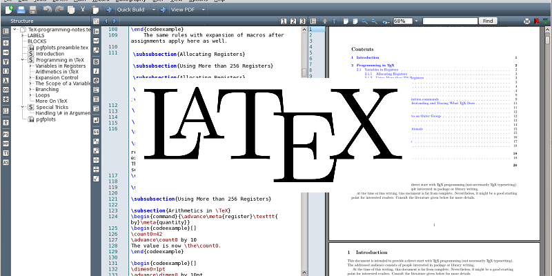

Definition of TIC
Information and Communication Technologies (TIC) refer to a broad range of technological tools and resources used to create, store, process, transmit, and exchange information. These technologies include computers, the internet, software applications, communication networks, and digital platforms that enable efficient communication and access to information. TIC plays an essential role in modern society by improving productivity, facilitating learning and collaboration, supporting decision-making, and connecting individuals and organizations across the world in various fields such as education, business, science, and daily life.
What do we use in TIC?
Microsoft Word
Word is a text processing software used to create and format documents.
Microsoft Excel

Excel is a spreadsheet software used for calculations, data analysis, and visualization.
HTML / CSS

HTML is used to structure web pages and CSS is used to style them.
LaTeX
LaTeX is a typesetting system used for scientific documents. You can use Overleaf which is an open-source online platform for LaTeX.
Git
Git is a version control system used to track changes in projects and collaborate with others.